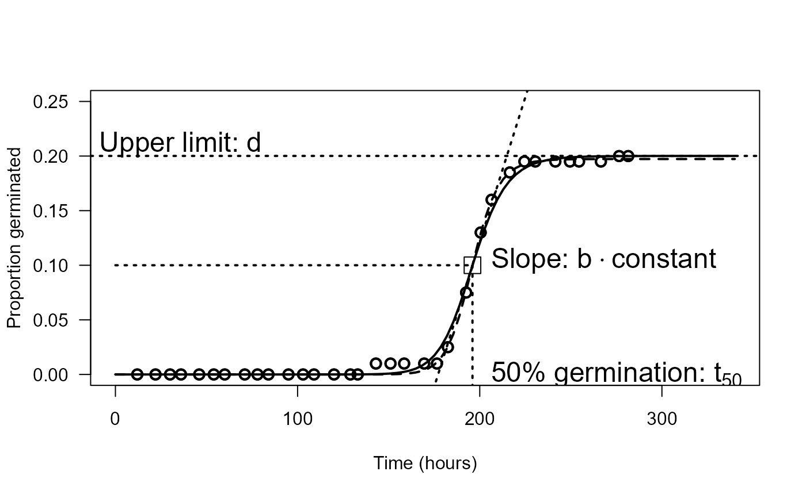

Germination of common chickweed (Stellaria media)
chickweed.RdGermination data from tests of chickweed seeds from chlorsulfuron resistant and sensitive biotypes
Usage
data(chickweed)Format
A data frame with 35 observations on the following 3 variables.
starta numeric vector of left endpoints of the monitoring intervals
enda numeric vector of right endpoints of the monitoring intervals
counta numeric vector of the number of seeds germinated in the interval between start and end
timea numeric vector of the non-zero left endpoints of the monitoring intervals (often used for recording in practice)
Details
The germination tests of chickweed seeds from chlorsulfuron resistant and sensitive biotypes in central Zealand were done in petri dishes (diameter: 9.0cm) in a dark growth cabinet at a temperature of 5 degrees Celsius. The seeds were incubated for 24 hours in a 0.3% solution of potassium nitrate in order to imbibe seeds prior to the test. A total of 200 seeds were placed on filter plate. After initialization of the tests, the number of germinated seeds was recorded and removed at 34 consecutive inspection times. Definition of a germinated seed was the breakthrough of the seed testa by the radicle.
Chickweed is known to have dormant seeds and therefore we would not expect 100% germination. It means that the upper limit of the proportion germinated has to be incorporated as a parameter into a model, which adequately reflects the experimental design as well as any expectations about the resulting outcome.
Source
Data are kindly provided by Lisa Borggaard (formerly at the Faculty of Life Sciences, University of Copenhagen).
References
Ritz, C., Pipper, C. B. and Streibig, J. C. (2013) Analysis of germination data from agricultural experiments, Europ. J. Agronomy, 45, 1–6.
Examples
library(drc)
## Incorrect analysis using a logistic regression model
## (treating event times as binomial data)
## The argument "type" specifies that binomial data are supplied
chickweed.m0a <- drm(count/200 ~ time, weights = rep(200, 34),
data = chickweed0, fct = LL.3(), type = "binomial")
summary(chickweed.m0a) # showing a summmary of the model fit (including parameter estimates)
#>
#> Model fitted: Log-logistic (ED50 as parameter) with lower limit at 0 (3 parms)
#>
#> Parameter estimates:
#>
#> Estimate Std. Error t-value p-value
#> b:(Intercept) -15.715465 1.954346 -8.0413 8.886e-16 ***
#> d:(Intercept) 0.207812 0.011541 18.0070 < 2.2e-16 ***
#> e:(Intercept) 198.161626 2.965343 66.8259 < 2.2e-16 ***
#> ---
#> Signif. codes: 0 '***' 0.001 '**' 0.01 '*' 0.05 '.' 0.1 ' ' 1
## Incorrect analysis based on nonlinear regression
## LL.3() refers to the three-parameter log-logistic model
## As the argument "type" is not specified it is assumed that the data type
## is continuous and nonlinear regression based on least squares estimation is carried out
chickweed.m0b <- drm(count/200 ~ time, data = chickweed0, fct = LL.3())
summary(chickweed.m0b) # showing a summmary of the model fit (including parameter estimates)
#>
#> Model fitted: Log-logistic (ED50 as parameter) with lower limit at 0 (3 parms)
#>
#> Parameter estimates:
#>
#> Estimate Std. Error t-value p-value
#> b:(Intercept) -27.1427205 1.1960927 -22.693 < 2.2e-16 ***
#> d:(Intercept) 0.1972877 0.0012527 157.490 < 2.2e-16 ***
#> e:(Intercept) 195.8040859 0.3479695 562.705 < 2.2e-16 ***
#> ---
#> Signif. codes: 0 '***' 0.001 '**' 0.01 '*' 0.05 '.' 0.1 ' ' 1
#>
#> Residual standard error:
#>
#> 0.003417113 (31 degrees of freedom)
## How to re-arrange the data for fitting the event-time model
## (only for illustration of the steps needed for converting a dataset,
## but in this case not needed as both datasets are already provided in "drc")
#chickweed <- data.frame(start = c(0, chickweed0$time), end = c(chickweed0$time, Inf))
#chickweed$count <- c(0, diff(chickweed0$count), 200 - tail(chickweed0$count, 1))
#head(chickweed) # showing top 6 lines of the dataset
#tail(chickweed) # showing bottom 6 lines
## Fitting the event-time model (by specifying the argument type explicitly)
chickweed.m1 <- drm(count~start+end, data = chickweed, fct = LL.3(), type = "event")
summary(chickweed.m1) # showing a summmary of the model fit (including parameter estimates)
#>
#> Model fitted: Log-logistic (ED50 as parameter) with lower limit at 0 (3 parms)
#>
#> Parameter estimates:
#>
#> Estimate Std. Error t-value p-value
#> b:(Intercept) -20.76747 2.94423 -7.0536 1.743e-12 ***
#> d:(Intercept) 0.20011 0.02830 7.0711 1.537e-12 ***
#> e:(Intercept) 196.05308 2.50570 78.2427 < 2.2e-16 ***
#> ---
#> Signif. codes: 0 '***' 0.001 '**' 0.01 '*' 0.05 '.' 0.1 ' ' 1
## Summary output with robust standard errors
## library(lmtest)
## library(sandwich)
## coeftest(chickweed.m1, vcov = sandwich)
## Calculating t10, t50, t90 for the distribution of viable seeds
ED(chickweed.m1, c(10, 50, 90))
#>
#> Estimated effective doses
#>
#> Estimate Std. Error
#> e:10 176.3700 3.4930
#> e:50 196.0531 2.5057
#> e:90 217.9328 4.2730
## Plotting data and fitted regression curve
plot(chickweed.m1, xlab = "Time (hours)", ylab = "Proportion germinated",
xlim=c(0, 340), ylim=c(0, 0.25), log="", lwd=2, cex=1.2)
## Adding the fitted curve obtained using nonlinear regression
plot(chickweed.m0b, add = TRUE, lty = 2, xlim=c(0, 340),
ylim=c(0, 0.25), log="", lwd=2, cex=1.2)
# Note: the event-time model has slightly better fit at the upper limit
## Enhancing the plot (to look like in the reference paper)
abline(h = 0.20011, lty = 3, lwd = 2)
text(-15, 0.21, "Upper limit: d", pos = 4, cex = 1.5)
segments(0,0.1,196,0.1, lty = 3, lwd = 2)
segments(196,0.1, 196, -0.1, lty = 3, lwd = 2)
text(200, -0.004, expression(paste("50% germination: ", t[50])), pos = 4, cex = 1.5)
abline(a = 0.20011/2-0.20011*20.77/4, b = 0.20011*20.77/4/196, lty = 3, lwd = 2)
#text(200, 0.1, expression(paste("Slope: ", b*(-d/(4*t[50])))), pos = 4, cex = 1.5)
text(200, 0.1, expression("Slope: b" %.% "constant"), pos = 4, cex = 1.5)
points(196, 0.1, cex = 2, pch = 0)

## Adding confidence intervals
## Predictions from the event-time model
#coefVec <- coef(chickweed.m1)
#names(coefVec) <- c("b","d","e")
#
#predFct <- function(tival)
#{
# as.numeric(deltaMethod(coefVec, paste("d/(1+exp(b*(log(",tival,")-log(e))))"),
# vcov(chickweed.m1)))
#}
#predFctv <- Vectorize(predFct, "tival")
#
#etpred <- t(predFctv(0:340))
#lines(0:340, etpred[,1]-1.96*etpred[,2], lty=1, lwd=2, col="darkgray")
#lines(0:340, etpred[,1]+1.96*etpred[,2], lty=1, lwd=2, col="darkgray")
#
### Predictions from the nonlinear regression model
#nrpred <- predict(chickweed.m0b, data.frame(time=0:340), interval="confidence")
#lines(0:340, nrpred[,2], lty=2, lwd=2, col="darkgray")
#lines(0:340, nrpred[,3], lty=2, lwd=2, col="darkgray")